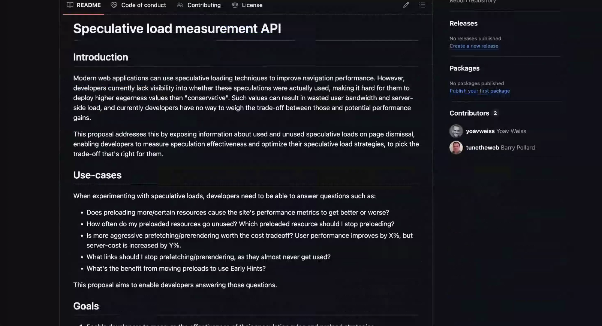

Participants
- Yoav Weiss, Nic Jansma, Adrian de la Rosa, Carine Bournez, Dan Shappir, Franco Vieira de Souza, Guohui Deng, Josè Dapena Paz, Philip Tellis, Bas Schouten, Michal Mocny, Andy Luhrs, Noam Helfman, Mike Henniger, Scott Haseley
Admin
- Next call - May 21st (11am ET)
- Mailing list shenanigans
- This meeting invite goes to Google Group mailing list. Was marked as containing problematic content
- Will be switching to w3c mailing list being subscribed
Minutes
Early Hints observability - Yoav
- Yoav: We are using Early Hints, and at some point they stopped working
- … We didn’t know about that, found out while someone was poking at network tool traces and reported it
- … Have no visibility to how widespread the outage is
- … Race, so we don’t know amplitude of missing optimization
- … Similar to speculative load measurements
- … Case
- Dan: If you didn’t know this was off, was it not valuable?
- Yoav: Valid question. In our setup, Early Hints are something we’re supporting but merchants are using
- … Very possible merchants are using it not necessarily productive and may not have affected bottom line
- … Optimization opportunity we’re offering
- Dan: Generally you want to measure impact, not features. If you see a degradation in performance, you can find what caused degradation vs. individual features
- Bas: Death by 1,000 cuts
- … If you can detect a specific things stops working
- … Slow decline is far more common to slip through
- Yoav: Especially if that decline is evenly spread across buckets in histogram
- … Measure specific things as well as outcomes, want to make sure outcomes are trending the right way
- … Speculative Load measurements can probably give us what we need, assuming we extend it

height: 872.00px; margin-left: 0.00px; margin-top: 0.00px; transform: rotate(0.00rad) translateZ(0px); -webkit-transform: rotate(0.00rad) translateZ(0px);" title="">- … We’ve made some adjustments to explainer, hanging it off Performance object rather than PageHide event
- … Removed “used” element of it
- … Be able to detect unused preloads, but we can also add info about early hints
- … Know if we can in Shopify case if they’re not being transmitted from early hints but from just link rel=preload
- … Also want a preconnect section here, whether they’re present or not (and used or not)
- …
- Nic: From a feature validation pov and debuggability pov, this makes sense. Makes sense to add it to speculative measurement
- Yoav: Opinions on preconnect?
- … Past there may have been objections that it wasn’t as useful
- Michal: Are those who would benefit most from this feature not here?
- Yoav: Chrome has UKM data on who’s using Early Hints?
- Michal: Use counts per-URL
- Bas: Speculative Load Measurements is a WICG thing?
- Yoav: Yes, proposal / prototyped in Chromium
- Noam: Did you consider solving this from ResourceTiming
- Yoav: EH are being reported to RT, but it’s based on initiator and doesn’t report preconnects
- Noam: Could we add speculation field to RT?
- Yoav: Problem with RT is that it’s hard to report use status for both preloads and preconnects
- … Because it’s a performance observer, it’s not being updated
- … Preload can change over time depending on when you observe them
- Noam: What constitutes “used”?
- Yoav: For preloads, if you have say a script actually used it later and got it from the preload cache
- Michal: ResourceTimings are given to page consuming resources. For Speculation Rules, embedder wouldn’t get RT for these things?
- Yoav: Clear why prefetch and prerender for RT, but for preload the “used” status and that it needs to be updated
- Yoav: If no strong opinions against it, I’ll add preconnect to list of speculations object
- … In terms of implementation not sure
- Noam: Would it also report on pretenders, whether it was navigated to?
- Yoav: That was initial plan
- … Had objections from Chrome loading team that introduces too much complexity and won’t necessarily be accurate
- … Navigation API exposes URLs you’re navigating to
- … We could add here, or extract URL from there
- … Gives you a sense of which navigation you’re likely to navigate to vs. ones you’re definitely not. (No-Vary-Search or Expiry related to timeouts)
- Noam: So far it’s not necessary to add prerender, if you’re tracking activation status flags
- Yoav: If you’re running on second page and collect activation status
- Noam: Not information that’s missing, just harder to get
- Yoav: How hard is it compared to browser complexity
- Franco: Link?
- Yoav: We have discussed it in past at length
- … One new bit of information is that reports that TTFB is missing in some scenarios in WebKit
- … responseStart attribute is missing
- … In cross-origin redirect cases, attributes zero’d in RT (without TAO opt-in) those same attributes are being zero’d in WebKit that is a cross-origin redirect that doesn’t include TAO
- … This used to be behavior of all browsers at some point
- … We changed it as TAO doesn’t make sense for this kind of opt-in
- … Vague memory from TPAC ~10 years ago
- … I think this changes the calculus about #160 as Interop issues developers are seeing are worse than what we previously though. No TTFB in Webkit in those scenarios can be confusing and misleading for developers.
- … Naive measurement script now assumes TTFB is zero
- Michal: I want to make sure I understand the timeOrigin values is? Different than other browsers?
- Yoav: Same as other browsers
- … We assumed in Wekbit timeOrigin moves to same request in destination origin, that doesn’t seem to be the case
- … Everyone is aligned on timeOrigin, but Webkit is zeroing out some of the attributes that are meaningful and some folks rely on
- … Interop impact is higher than what we thought it is
- … We can either move the timeOrigin to final navigation, and add redirect duration while removing redirectStart and redirectEnd that will no longer make sense. Or can move to first on destination origin, but that’s more confusing than necessary
- Bas: If we spec timeOrigin to final navigation, that removes the objections to exposing those numbers because they’re now relative to that timeOrigin
- Yoav: Correct
- … The actual redirect duration could be something that Webkit is not exposing, or only exposing given a certain opt-in
- … Will avoid TTFB=0 fallacy
- … Comment from Anne where I tried to align implementation to spec, this would result in information exposure in #160
- Michal: I know from past experience downloading large images, delta responseStart vs. resposneEnd is smaller than what we expected. TTFB can be large and problematic. So if Webkit doesn’t expose responseStart and end?
- Yoav: Exposes responseEnd
- Michal: You could get Time to Last Byte (TTLB), how different?
- Yoav: For HTML call where you can have API call in middle, it could be big
- Michal: From timeOrigin to first timestamp? Through any mechanism.
- Bas: FCP could be before responseEnd
- Michal: Other timestamps could be a proxy
- … Hiding responseStart, how much accuracy does it hide?
- … Given timeOrigin is where it is, and other timestamps exist
- Bas: Tells you which layer problem must be occurring in
- … Ability to serve a file
- … Not sure anything else tells you that definitively
- Yoav: You could deduce things from FCP, but FCP also includes a lot of other (critical resources)
- Michal: Moving timeOrigin is a substantial change and valuable time range would be missing
- … Suspect you could get much of the value on Webkit without perfect accuracy
- … If Webkit chooses to not report an accurate duration you’d remove this
- Yoav: You’re saying this could reduce accuracy of FCP in Webkit?
- Bas: Is Webkit reporting those metrics then?
- … Are we waiting for them to zero out those values as well?
- Franco: Google search page tries to estimate this by performance.now() on top of HTML, hardening for .now() for these reasons
- Bas: Feels like moment we encourage web community to use a proxy, that would also eventually go away
- Yoav: I would argue that there is material difference between the time that timeOrigin (time request for last navigation went out), everything is under developer’s control.
- … The redirect time is the main thing is working w/ ad campaign managers to stop using referrer A vs. referrer B.
- … Feels like it would add clarity to measurement to split time and make it clear redirect duration vs. actual time on the page. Can add opt-ins for those redirectors.
- … Opt-in to say not afraid to expose that data
- … Direction we can nudge
- Michal: Some products wrap links and redirect. Inbound traffic you may not have control over.
- … Plenty of examples where developers accidentally added large latencies in this area
- … LCP and FCP to go other direction, where ideally it’s from the moment the user clicks the link until they see that link. Inbound domain may not always be in control, nice to segment.
- Yoav: Tim V presented about UNO and Noise Cancelling RUM, missing times
- … Maybe we need additional things
- Michal: Prompt isn’t counted
- … I would be sympathetic to a change like this
- … Larger lock of duration under an opaque budget, or segment out
- Yoav: Or through opt-ins or whatever
- Michal: Would also help interop problem, making sure we all start at the same point
- Bas: You can zero out the things you don’t want to expose as a User Agent
- Yoav: Positive vibes around this
- … I can put together a more concrete proposal, future call
- … Also get Anne and maybe Alex to make sure we can talk about this more seriously
- Michal: There are other ways to redirect, like local client redirect. How many are included in a single timeline when it gets reset.
- … Thinking about a document and its responseStart, or a chain?
- … What about incoming domain/document? Separate project
- Yoav: Expand on that?
- … Counting server-side redirects and not client-side redirects
- Michal: That’s number one. Should timeOrigin the final document begins, to be after redirects? Just after X-O redirects?
- Yoav: Prefer after all redirects, be able to account for them in some other ways. Hard to reason about
- Michal: The whole world can shift (e.g. with FCP)
element-timing#42
- Michal: Related to post-Interops follow-ups and Container Timing
- … Below the fold / above the fold content and how we define these
- … LCP does viewport intersection, and only things visible to the user are reported as candidates
- … Not how Element Timing works now (only in Chromium)
- … Depends on how far below the fold Chrome renders ahead of time
- … If you report Elements BTF they have zero size
- … If you’re scrolling and content may go in and out of viewport
- … There’s an unresolved question, is Element Timing used for?
- … (1) Added content to page, need to know when it’s ready for rendering
- … (2) Understand when user saw the content
- … Historical precedence for both use-cases
- … In that Chromium that use case doesn’t work perfectly, only if Chrome pre-renders
- … We’d like to make it just consistently when user sees content in viewport
- … Similar to IntersectionObserver for first pixel or full content
- Yoav: It should align with LCP with Intersection Rect with viewport
- … When user sees thing, you should record it
- Scott: Scroll is hard as when it happens on compository thread, we just don’t know
- … Becomes visible is not efficient for us in certain edge cases
- Yoav: Paint happens before user sees it, hard to know when
- Scott: Already hard for LCP, would be nice if things are aligned
- Michal: Container Timing also has an unresolved question about how to handle scrolling
- … Tracks how much viewport region is occupied by paints
- Jose: As the prototype of Element Timing we didn’t get events from offscreen
- … Using same hooks with different conditions, very similar. Happening in same way.
- Michal: Element Timings will fire below viewport but you do your own intersection?
- Jose: Intersection is using same call
- … Transforming paint area to area on screen / intersection with viewport
- … Have a lot of painting happening off scroll
- … Finding a way to represent this properly, hard
- … Solutions should be consistent
- Michal: Sometimes it’s not rendered/visible, but it’s available below the fold
- Jose: Rendered but not visible to user, render offscreen
- Michal: Also an open Interop question around load time, before rendered, there’s questions of interoperability
- … Could discuss whether we can use that to solve this issue
- Jose: We can have time something is rendered vs. presented, was not originally designed for that case